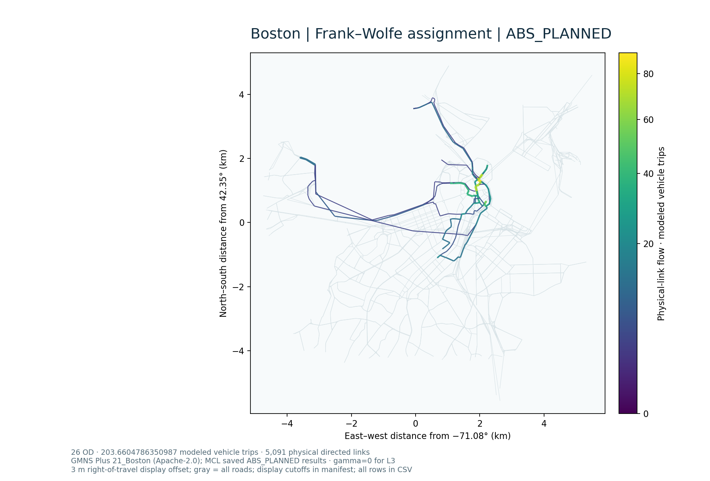
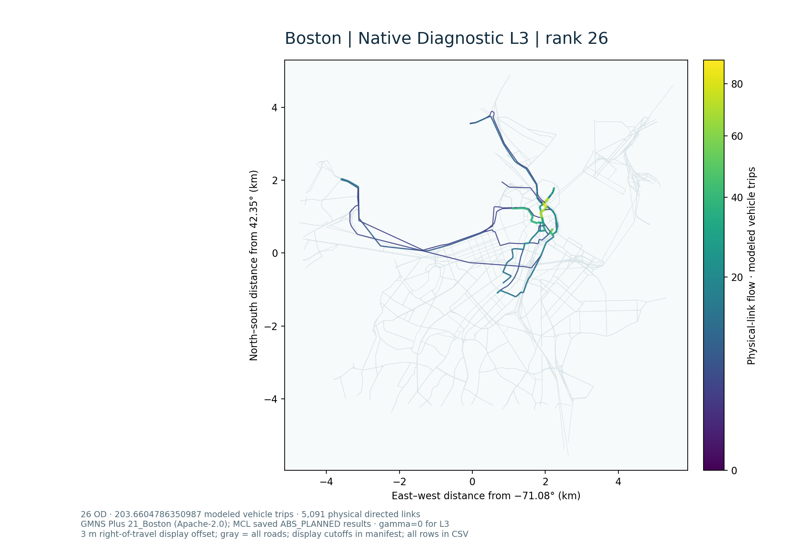
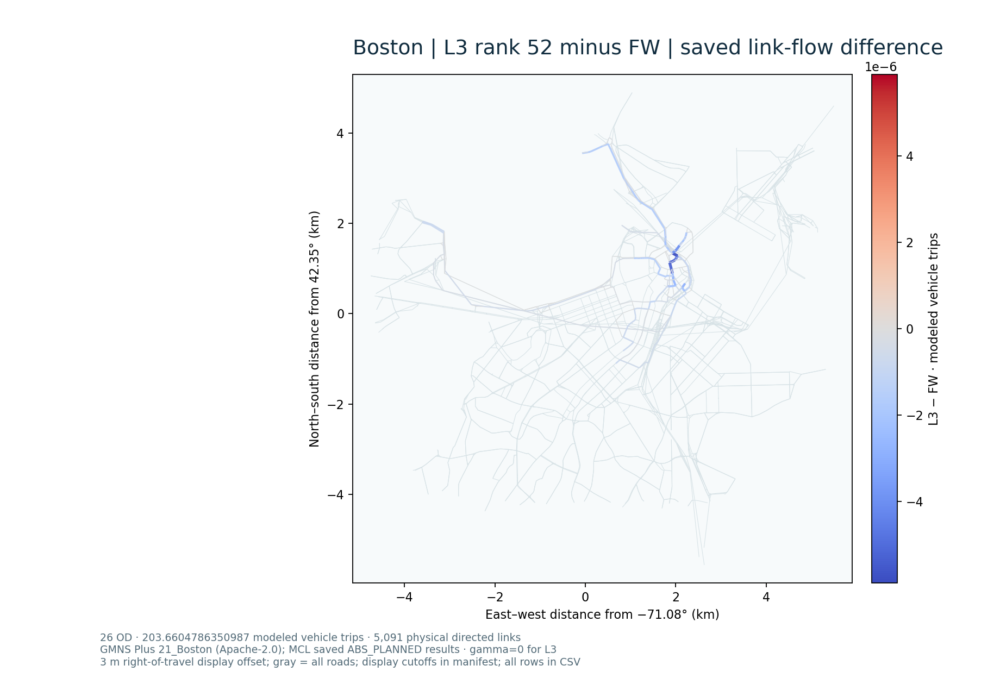

Documentation / Boston · same-instance static assignment methods
Boston · same-instance static assignment methods
The frozen ABS_PLANNED conditional panel is one 5,091-physical-link, 26-endpoint-OD, 203.6604786350987-modelled-vehicle-trip Beckmann/BPR instance with a 130-path finite pool. FW, the uncompressed SLSQP path reference, and the two accepted native Diagnostic L3 representations use those identical link/demand/pool bytes. This algorithm comparison is not the earlier semantic S1/S2 service-feedback comparison (about 202.078384/202.070733 vehicle trips) and is not measured congestion.
Boston case · Four-stage and GPS example · GMNS exchange and ID relationships · Saved files
Same-instance saved result
| Method / selected run | Path representation | Original Beckmann F (vehicle-minutes) | Max OD residual (trips) | Signed full-network gap | Full-network relative gap |
|---|---|---|---|---|---|
| FW · ABS_PLANNED | network assignment | 707.0579230712884 | no public path decomposition | approximately zero in frozen audit | approximately zero |
| Full path · SLSQP | 130 nonnegative paths | 707.0579230712882 | 0 | 7.958078640513122e-13 | 1.1254939019453976e-15 |
| Native L3 · rank 26 · outer 02 | 52 reduced path coordinates + 5,091 explicit links = 5,143 native variables | 707.0578811137339 | 8.255328278750085e-7 | −4.19575542309758e-5 | −5.933966773022305e-8 |
| Native L3 · rank 52 · outer 02 | 78 reduced path coordinates + 5,091 explicit links = 5,169 native variables | 707.0578811562873 | 8.254705861077127e-7 | −4.191500090655609e-5 | −5.927948547394401e-8 |
These native points pass the recorded numerical tolerances but are not exact feasible equilibria: the small negative signed gaps reflect accepted OD deficits, not rounding or a superior solution below the feasible optimum. The native initial path flow reuses the full-path reference; this is a reference-informed fixed-instance transfer, not a cold-start or general speedup test. IPOPT peak memory was not recorded. No independent empirical validation or strict cross-city performance comparison was made.
Physical-link flow maps
The three absolute maps share one EPSG:4326 source geometry, local map projection, extent, background, PowerNorm colour scale and line-width rule. Modelled vehicle trips are the unit. Directed links are drawn with a 3 m right-of-travel display offset so reciprocal arcs can be distinguished; source WKT and all numerical joins remain unaltered. Gray shows all 5,091 physical road links, including zero-flow links. Coloured absolute flow is drawn only above 1e-6 trips; omitted coloured-row counts are in the figure manifest, while every link stays in the full-precision CSV. A common scale means the three maps can legitimately look visually indistinguishable.


Signed native-minus-FW differences
Both maps use the same zero-centred symmetric scale. The maximum absolute link differences are 5.888579437396402e-6 (rank 26) and 5.88828736169944e-6 (rank 52) modelled vehicle trips. Full-path versus FW differs by at most 1.4210854715202004e-14. The difference figures show micro-scale numerical variation; they are not service changes, observed traffic, or a congestion benefit. Values with |Δ| ≤ 1e-12 are omitted from the coloured overlay but remain in the full-precision table.

All 5,091 linked rows with original WKT and full-precision FW/full/rank values · Figure member hashes, fields, extents, scale and credits · No-solve renderer
GMNS physical link_id and the documented exchange crosswalk let method outputs attach to the same road geometry. For example, the plotting table's physical link 4624 has from_node_id=192, to_node_id=193, source link_id=4624 and a saved FW flow of zero; that source key remains distinct from any exported numeric link ID. The old route-60 GMNS/GPS figure and its S1 value are a different evidence object, not a measurement of these ABS_PLANNED outputs.
Sources and read-only checks
- Static FW implementation, source SHA-256
1e46f39280f6bbcc1183ab78f6ae1007572c4997b4857ff4e041232676e88149; original frozen link/demand hashesa5a7bbf9e18ceadacbe29335e572d2ccbfa919b46960845efc3d79d876007479and00d8c615a03b77f3a28be674cbbed4ef435efd301732dcfd1765f88a74399b49. - Actual finite-path SLSQP source and config; its 130-path solution and 5,091-link reconstruction are directly released.
- Corrected native L3 builder and Boston adapter; gamma=0, linkwise beta-aware BPR and zero explicit-link lower bound. Only the accepted outer-02 rank-26/rank-52 records are selected.
python -B tools/mcl_results.py list --case boston
python -B tools/mcl_results.py verify-saved --run boston-abs-planned-full-path
python -B tools/mcl_results.py verify-saved --run boston-abs-planned-l3-rank26-outer02
python -B tools/mcl_results.py verify-saved --run boston-abs-planned-l3-rank52-outer02
python -B tools/visuals/render_boston_assignment.py --source-root examples/boston/assignment_methods_r1 --output results/boston_assignment_maps
These commands inspect or plot saved files. A new native solve, path generation, basis calculation, probability evaluation, GPS matching or model calibration is not part of this result.